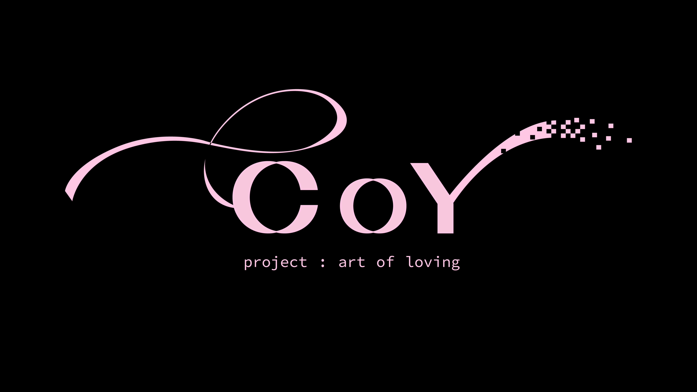
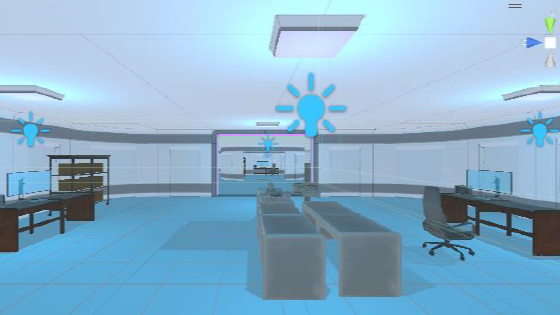
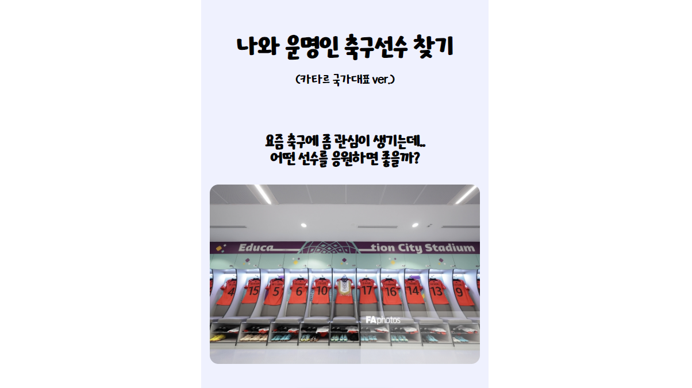
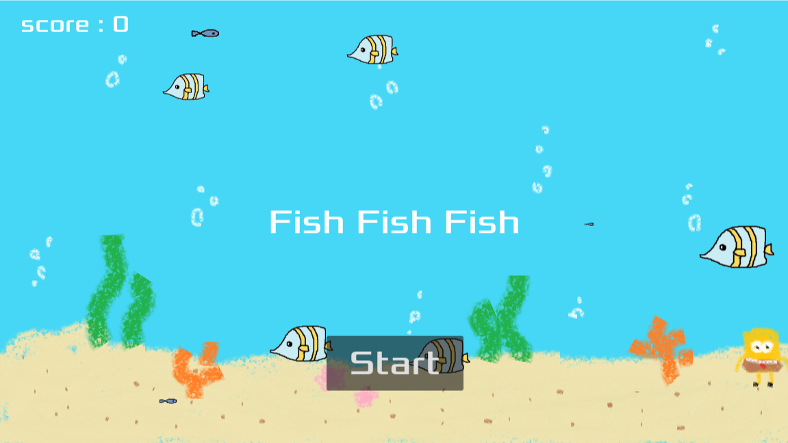

My Portpolio
Home
Project

COY ; Art of Loving
게임제작동아리 KING의 겨울방학 프로젝트로 시작한 게임 개발 프로젝트이다. Unity 2D로 개발하였고 연애시뮬레이션 게임으로 PC버전 출시를 앞두고 있다.

Escape from the Lab
융합콘텐츠학과 전공 '가상현실콘텐츠' 수업 프로젝트로 제출한 3D 게임이다. Unity 3D로 개발하였고 폐쇄된 연구실에서 거대 거미를 피해 연구실의 버그를 수정하여 탈출하는 게임이다.

축구선수 이상형 테스트
융합콘텐츠학과 전공 '웹콘텐츠개발' 수업 프로젝트로 제출한 웹페이지다. HTML, CSS, JavaScript로 개발하였고 축구 선수와 관련된 테스트 항목을 선택하면 자신의 취향과 가장 비슷한 축구선수의 정보를 얻을 수 있는 간단한 심리테스트 페이지이다.

Fish Fish Fish
교환학생 파견교에서 수강한 'Games Fundamentals' 수업 프로젝트로 제출한 게임이다. Godot Engine으로 개발하였고 자신보다 큰 물고기를 피해 작은 물고기를 먹으면서 살아남는 게임이다.